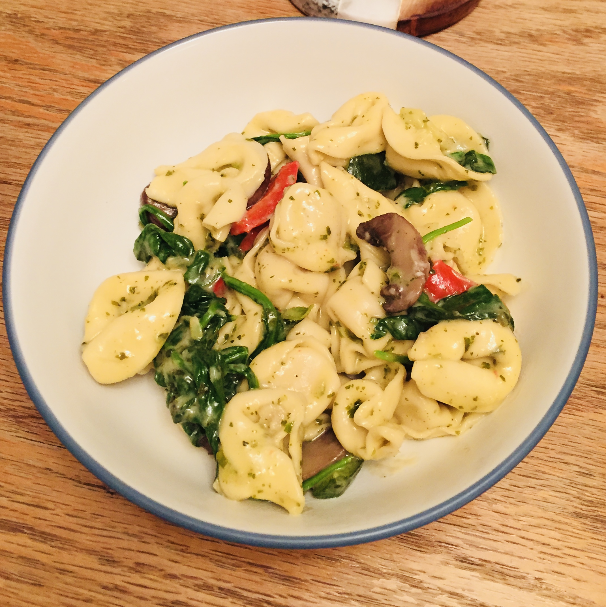

Pesto Tortellini With Veggies

Ingredients
- 1 medium zucchini, ends trimmed, sliced into half moons
- 1 red bell pepper, diced into 3/4-inch squares
- 8 oz button mushrooms, sliced fairly thick
- 1 (10.5 oz) pkg. grape or cherry tomatoes, halved
- 2 Tbsp olive oil
- Salt and freshly ground black pepper
- 2 cloves garlic, minced
- 1 (20 oz) pkg. refrigerated three cheese tortellini
- 4 cups (4 oz) fresh spinach
- 2/3 cup homemade or store-bought pesto
- Finely shredded parmesan cheese, for serving
Instructions
1 . Preheat oven to 425˚F.
2 . Place zucchini, bell pepper and mushrooms on a baking sheet. Drizzle veggies with olive oil and season with salt and pepper then toss to evenly coat.
3 . Roast in preheated oven 10 minutes, then remove, add tomatoes and garlic and toss. Roast 10 minutes longer or until veggies are tender then remove add spinach and toss, roast 1 minute longer or until spinach has wilted.
4 . While veggies are roasting cook tortellini according to directions listed on package and drain.
5 . Pour drained tortellini into a large bowl. Add in roasted veggies and pesto and season with salt and pepper to taste then toss to evenly coat.
6 . Serve warm, top each serving with parmesan cheese.
Original Source: Cooking Classy